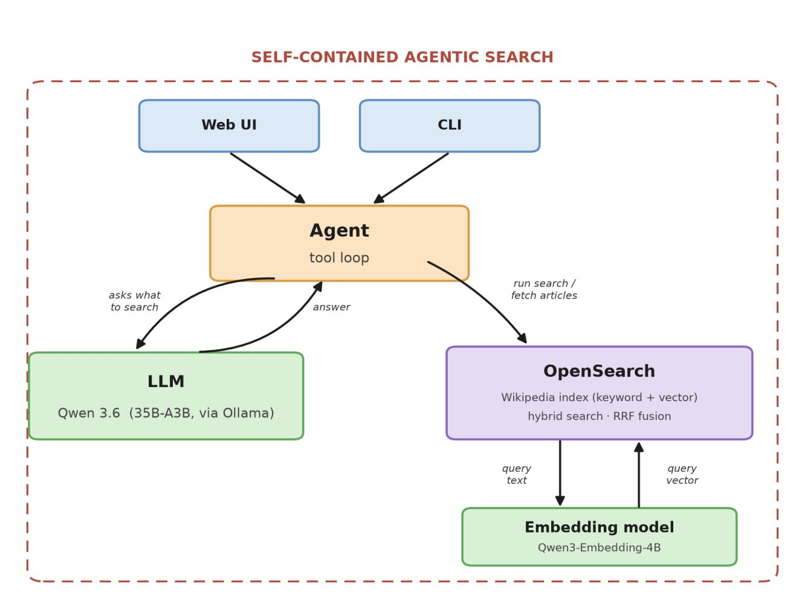

Private Agentic Search Across Your Knowledge Base
All companies accumulate knowledge, spread across wiki pages, Jira tickets, markdown files, SharePoint documents, and more. Finding the right information without searching each platform individually — often on tools without a state-of-the-art search — is tedious and time-consuming.
What if we could push everything into an overarching index, give an agent access, and simply retrieve information across all platforms by talking to it? Claude, ChatGPT and co. are very powerful tools, and they do exceptionally well at agentic search. If you let these models search your knowledge base, they can understand it, answer questions, and reason about it. But what they cannot offer is privacy.
With a bit of coding and a bit of local GPU power, you can build a self-contained agentic search across a large knowledge base — one that does not require a connection to the outside world.
As a proof of concept, I built a local, fully self-contained agentic search across a large knowledge base. I used the entire dump of the English Wikipedia as a placeholder for a local knowledge base: 7.2 million articles, 116 GB of uncompressed text. Everything is indexed, along with vector embeddings, in OpenSearch, and my locally running agent — powered by Qwen 3.6 — reliably answers all kinds of questions, as long as the answer is somewhere in those 7.2 million articles.
How well does it work?
Before jumping into the technical details, let's evaluate how capable the agent is at answering questions. I used Fable 5, the most powerful LLM we have access to as of writing, as the judge. I asked it to come up with 10 questions for my agentic search and to rate the results.
Five of the questions had to be after the knowledge cut-off (end of 2025) of Qwen 3.6. For those, the answers had to come from the knowledge base — our Wikipedia index. The questions ranged from “What was the result of the 2026 Hungarian parliamentary election?” to “What was the estimated population of the Roman Empire at its peak, and roughly when was that?”
Fable 5 scored 8 out of 10 questions with the max score of 5, and 4 for the other two. Overall, 4.8 out of 5 — pretty impressive, given the agent has no internet connection and its LLM runs on a MacBook.
Implementation Details
Architecture Overview
The entire system is self-contained, with no access to the internet. No data is shared with anybody.

Data Ingestion
First, I parsed and cleaned all Wikipedia articles into raw text without any wiki-markup. While doing so, I also extracted the first paragraph as its own field. For most articles, the first paragraph is the lead.
Then I indexed all 7.2 million articles with vector embeddings in OpenSearch. For the embeddings I used Qwen3-Embedding-4B, which only needs around 12 GB of VRAM. I decided to embed only the lead — doing it on the entire article would have ballooned the indexing time on a single GPU from around 75 hours to more than 15 days.
Semantic Search
I do a lexical search on the title and text (with a boost of 2 on the title), and a vector search on the embedding of the lead. The results are fused together with Reciprocal Rank Fusion (RRF).
Agentic Loop
I registered two tools for the agent. The first is a hybrid search over the knowledge base — the Wikipedia index. The agent sees the title and the first 300 words of the top 10 documents. The second tool fetches a specific article in its entirety. The agent first runs a search and then decides whether any of the returned articles are of interest; if so, it can choose to fetch the complete article.
Used Hardware
OpenSearch runs on an Ubuntu desktop with a 12-core CPU, 64 GB of RAM, and an RTX 5080. That GPU is too small to run the agent, but it's used for generating vector embeddings. The agent runs locally on my MacBook. Qwen 3.6 — qwen3.6:35b-a3b-q8_0, to be precise — requires around 38 GB of VRAM.
Real-World Deployment
Even for a single user, something like an Apple M5 Pro is too slow, especially if the agent decides to fetch entire articles from the OpenSearch index. Some of these articles are thousands of words long, and processing them can take more than 60 seconds on an M5 Pro.
So I ran some tests with rented Nvidia GPUs — cards like an A40 with 48 GB of VRAM or an A100 with 80 GB of VRAM. Inference on an A100 is around 10× faster than on an M5 Pro. Such a GPU is more than sufficient and gives some headroom for concurrent users. The entire setup could run well on a single node with a modern 8-core CPU, 64 GB of RAM, and an enterprise GPU like an A100, and could serve multiple users.
Conclusion
This proof of concept shows that a fully local, agentic search over a large knowledge base works — and works reliably. 7.2 million articles, no internet connection, nothing ever leaving your infrastructure.
A local agentic search gives you the reasoning power of a modern LLM applied to your own data, fully self-contained. The hardware is affordable and the tooling is mature. If you are sitting on a large, fragmented knowledge base and care about privacy, this is achievable right now.